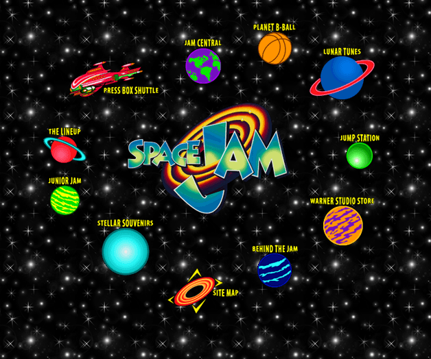
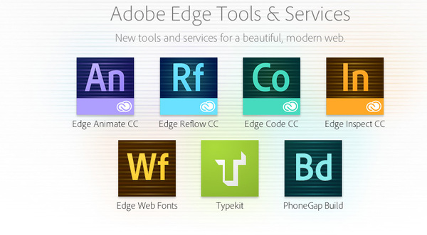
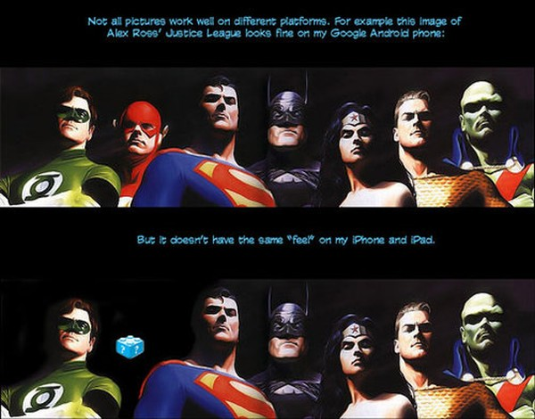

Adobe Edge Tools
and the Death of Web Development
This guy: AJ Zane
@azanebrain | github | g+
Background:
Interactive Multimedia, Digital Marketing, Big Data Analytics, East Asian Studies
I'm AJ Zane.
History:

Yes, it's still online
~bend to your will~
Present:
Things have changed a lot in very good ways:
Not easier
But it's not any easier
ADOBE
Adobe has been trying to make it easier for a long time.
Edge Tools Overview

Edge Tools
Animate
“...lets web designers create interactive HTML animations for web, digital publishing, rich media advertising and more, reaching both desktop and mobile with ease.
The quote: "lets web designers create interactive HTML animations for web, digital publishing, rich media advertising and more, reaching both desktop and mobile with ease."
Features
Include external JS libraries
Edge Commons Extension LibrariesHost assets through Adobe CDN
Import into other Adobe tools (Reflow, Muse, InDesign)
Interactivity
Showcase
Put a lot of work into keeping Animate projects modular and portable
Demo
Demo:
Longevity
Flash was great

The big question is should you spend time learning this?
✓ HTML5
✗ Hard to read
Easy integration into other Adobe Tools today...
Right now the code is HTML5 compliant.
Reflow
Demo
grid
Trouble
✗ No JPG preview
✗ No complex shapes
* Only export to HTML (it gives you a warning that it should not be used for production sites)
Target Audience
Designer/Dev teams
Common lexicon
Less back-and-forth
Basically a fancy wireframe
I think this is for designer/dev teams as an inbetween step from PSD to HTML
Inspect
Demo
Screenshots from all devices
Remote inspect
Integration with Reflow
Live edits through Edge Code
! Show the setup infographic before the actual demo - chrome-extension://ijoeapleklopieoejahbpdnhkjjgddem/firstrun.html
Requirements
Only works in Chrome
Desktop app, chrome app, mobile app (iOS, android, Kindle Fire)
Muse
“ Allows designers to create HTML websites for desktop and mobile devices without writing code.
Dreamweaver is still in development
That description is really important.
Dreamweaver without the code box
Build sites like you're in PhoSho / InDesign
Free hosting on Adobe Business Catalyst
Quality?
Class and ID heavy
but comparable to a framework like Foundation or Bootstrap
Business Catalyst works as a CMS
Site of the Day
* As you would expect, there's tons of classes and IDs